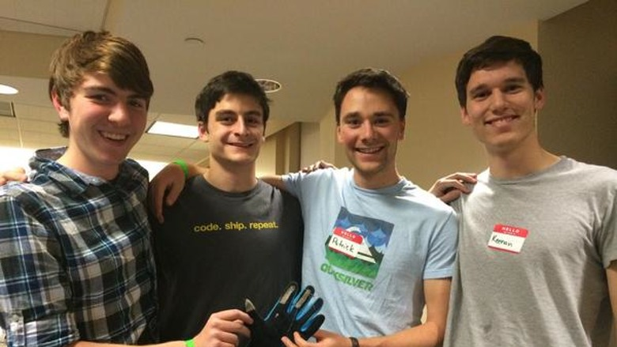

#HashtagGloves was a hackathon project from HackHolyoke in the Fall of 2014. Working in a team of four, we developed a pair of gloves with conductive fabric on the tips of the fingers, so that when the user tapped their fingers together in the 'hashtag' gesture, this triggered a voice recognition listener and would 'tweet' whatever was said from the user's account. We used an Arduino wired to the gloves, as well as a Python script using Twitter's API and Google Voice API.
Inspired by a silly Jimmy Fallon and Justin Timberlake sketch, this project won us 3rd place at the Hackathon! A week later, we were approached from a writer of the DailyDot asking if he could interview us about our creation. We agreed, and several days later, a fun article was published. To our surprise, many other news sites, including ones like Gizmodo, Buzzfeed, and Today.com also published articles about our project. The feedback was quite extreme, as some deemed them innovative and others 'objectively the worst gloves.' Gizmodo wrote a hate article about us, but we weren't too hurt since they thought this was a product going to market rather than a silly hackathon project.
Check out our Repository or some of the articles published about us below: